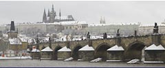
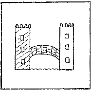

 |
As do other people with a camera, Michel Galiana fixed his
traveller's impressions and recollections in his poems.
The following seven sonnets are dedicated to Prague which he
visited when the Soviet Red Star was still gleaming over
the Golden City.
Vysehrad
Rain on the Grand Priory Square
Saint Nicholas Church on the Lesser Side
The Charles Bridge
Saint Luthgard
Night in the Old Town
The Golden City
